Design education field communication and expert forum
In January 22, 2014, Li Keqiang prime minister of China, at a meeting of the standing of the State Council, to promote the development of cultural creativity and design services and related industries for the deployment of the overall work combination.
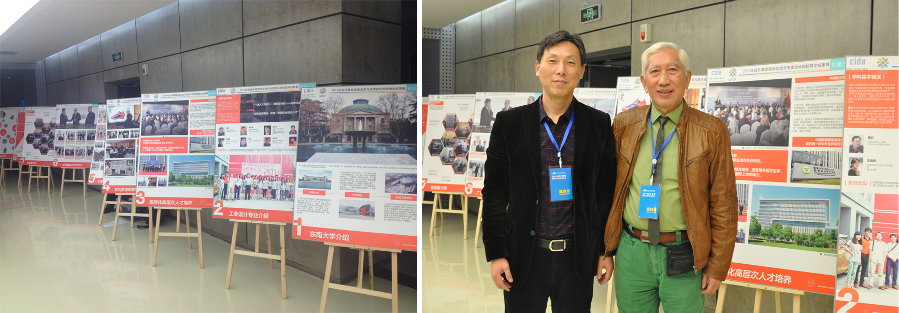In the upsurge of design industry got high social attention, the expert working committee of China Industrial Design Association experts integrate their resources, aggregate design education model power together to host series activities of "design education field communication and expert forum". The special activities have Southeast University, Tsinghua University, Guangdong Industrial Design Training Institute, Dalian Nationalities University, Nanjing Arts Institute and other colleges and universities and the national intellectual property pilot Creative Industry Park (Zhengzhou) as the organizers of the activities, they showed the characteristics of teaching from their outstanding achievements of experience while doing on-the-spot teaching, observation, communication, and by the way to the forum, and actively explore the transformation and development of Chinese industrial design education.

During the activity, professor Xue Chengqi from Southeast University gave an in-depth report on prospective problems as how to cultivate high level industrial design talents.
The design education field communication and expert forum successfully held in Southeast University in 2014
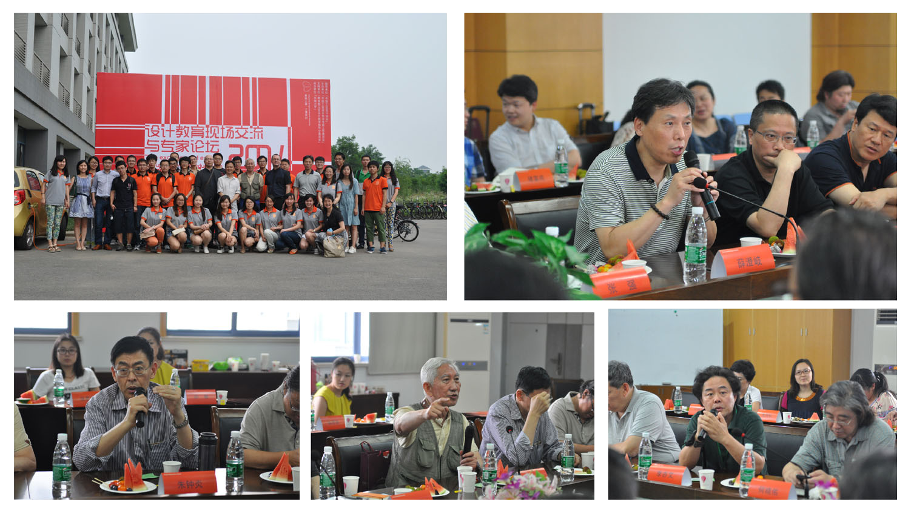The design education field communication and expert forum successfully held in Southeast University in 2014, many well-known figures attended the grand conference: Professor Xue Chengqi from Southeast University, Liu Guanzhong a luminary of the industrial design industry of China, Professor Zhu Zhongyan from Tongji University, etc. Done an in-depth study among today's Chinese experts on industrial design and made heated discussion on the development and reform for the future of design education.
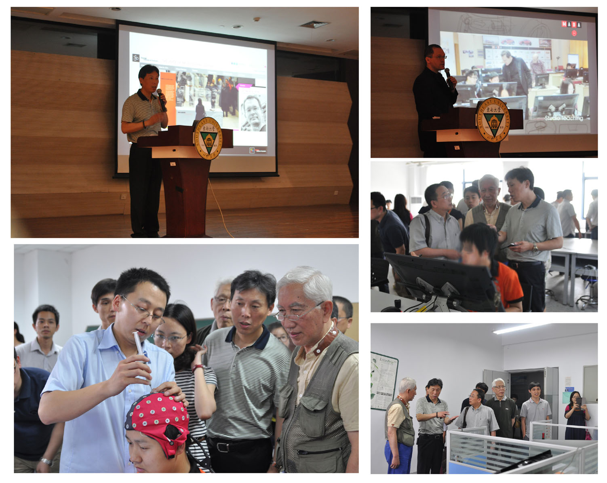Many teachers of industrial design of my school also made a wonderful speech at the meeting, afterwards, experts led by students visited our school laboratory equipment, WACOM laboratory in our school, and visited our school independent pioneered advanced R & D design method of brain electrical activity.
Professor Alex from Rheinisch Westfaelische Technische Hochschule Aachen University give a speech to our school
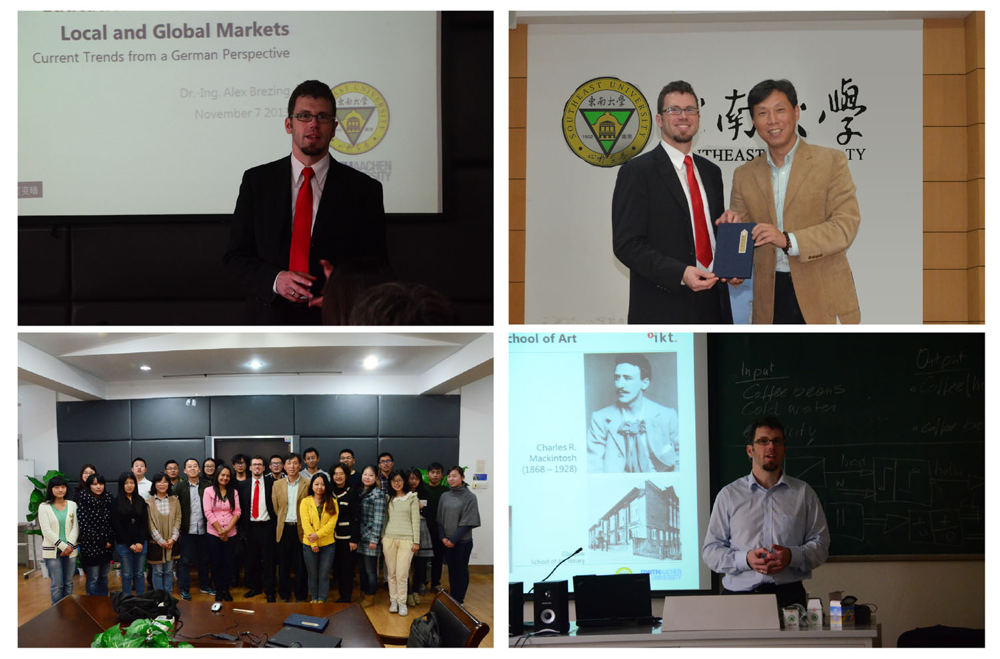Professor Alex from top University of the world: Rheinisch Westfaelische Technische Hochschule Aachen University give a speech to our school,the international exchange and cooperation projects aimed at strengthening international cooperation of Southeast University and Monash University joint graduate School of foreign cooperation in running schools, through multiple channels and design of SIW lifting Southeast University industrial design students practice ability and improve students’ design thinking.
Senior engineer Zhang Qiang from STANLEY Black & Decker power tool company of USA give a speech to us
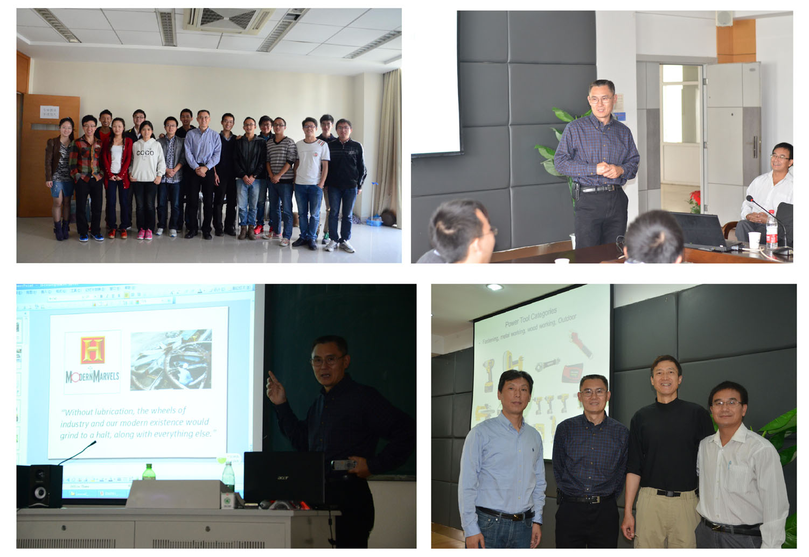Senior engineer Zhang Qiang from STANLEY Black & Decker power tool company of USA give a speech to us, Zhangqiang is also a graduate student of Southeast University who is now stayed in USA and has long been engaged in the work of power tool design. He came as the teacher of school-enterprise cooperation projects and taught in detail about the mystery and feature with design development and production to our students.
4th International Innovational Design & Education Forum
International Innovational Design & Education Forum is an international grand gathering of design and education,which was initiated and organized by School of Design of design,NUST(Nanjign China ).Since 2007, it is scheduled to be hold every two years and supported bymany domestic and foreign institutions, expetrts and colleagues.

During the activity, professor Xue Chengqi from Southeast University gave an in-depth report on prospective problems as how to cultivate high level industrial design talents.
Nanjing Innovation 2013 Exhibition of International Universities' Design ,as the main part and most distinctive academic exchange activity of the 4th International Innovational Design & Education Forum, will display design work of teachers and students majoring in design from universities and colleges all over the world.
The group of leaders and experts of Samsung electric company supervised our latest project

The group of leaders and experts of Samsung electric company from Suzhou supervised our latest project which required us to design a laptop computer of new trend for college students in Dec. 2nd. During the special meeting, Professor Xue introduced the industry design discipline of SEU which has a profound promotion in the passing decade. After that, our industry design Lab submitted the work of laptop computer, it is designed by the group leading by Professor Xue of more then 10 people, among them there are masters and doctors in our lab. And Mr. King, the leader of Samsung electric company spoke highly of the project with big satisfaction.

Later, Pro. Xue、Pro. Zhang、the dean of Suzhou joint school and the leader of Samsung electric company Mr. King unveiled the latest model of the product together with other specialists.
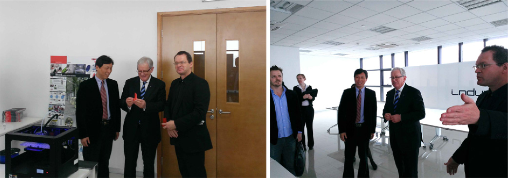 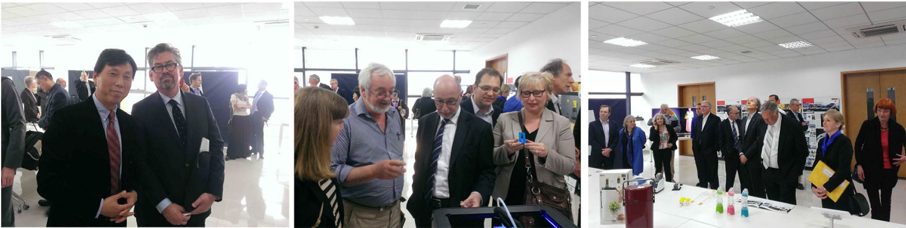The present of the Art design school in Monash University visited the lab of industrial design
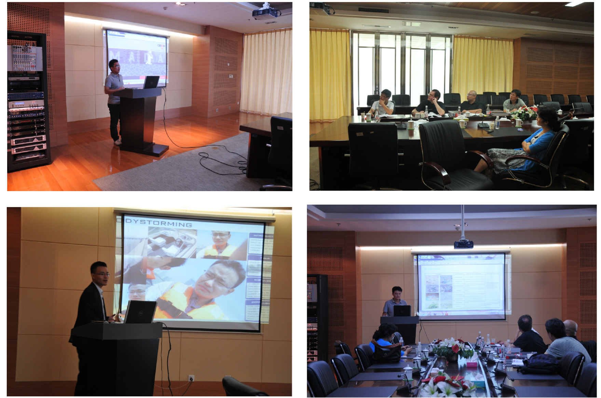Graduation thesis defenses 2013
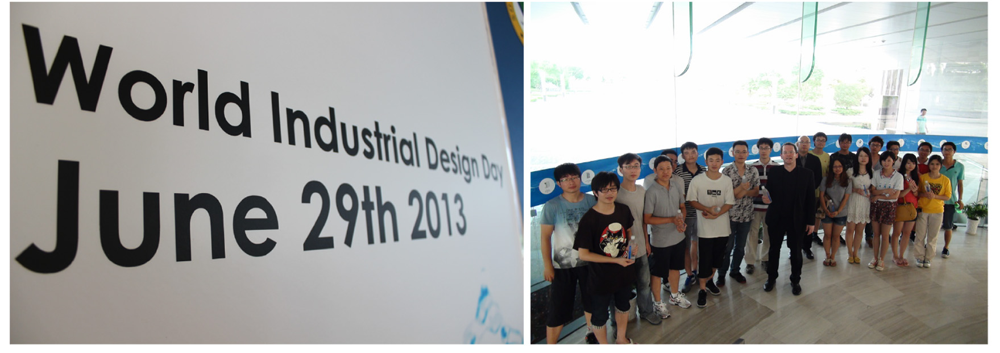World Industrial Design Day 2013
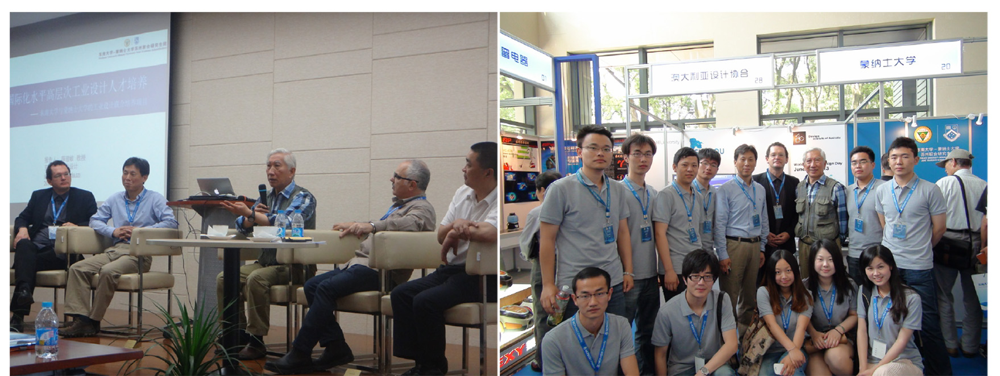The first session International Forum of the China and Australian Industrial Design
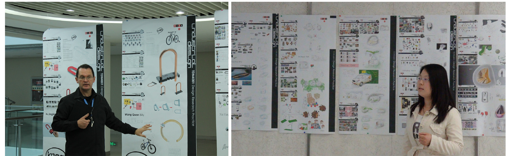Interactive teaching, experiential classroom and one to one tutor
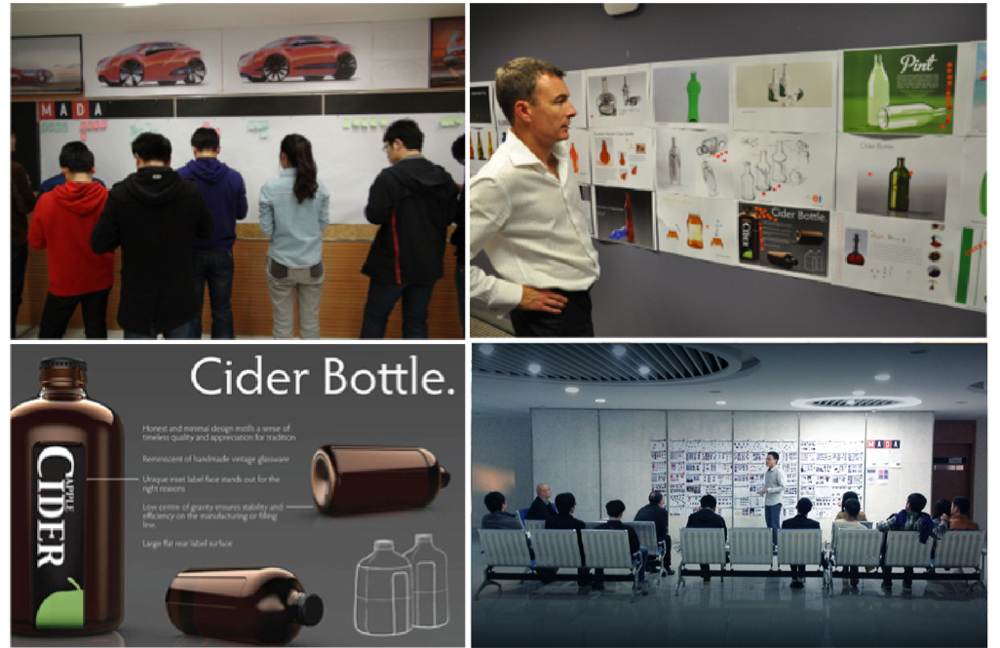This is an opportunity to show your products, which is a good opportunity to communicate with your classmates and professional teachers. Everyone can understand you better, then, Professional teachers can give you idea to modify your design.